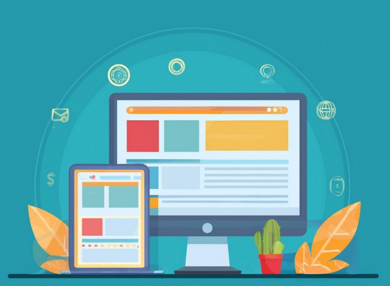

Company Website Redesign & CMS Implementation

Directed the full redesign and launch of Quoin’s public website, improving UX and brand alignment.
Company: Quoin
Duration: Apr 2020 – Feb 2024
Tools: HTML, CSS, AWS ECS/Fargate, Docker, GitHub, Genetics Mesh CMS
Platform: Public Company Website
Delivery Method: Agile (Scrum/Kanban)
Link: Visit Quoin
Work Done
- Led redesign of site layout with a mobile-responsive, modern interface aligned to new branding goals.
- Served as content administrator and handled CMS configuration and updates.
- Managed Agile execution from discovery to deployment using Scrum ceremonies and backlog prioritization.
- Collaborated with developers to implement infrastructure enhancements using AWS and Docker.
- Ensured site security and performance through regular audits and CI/CD improvements.